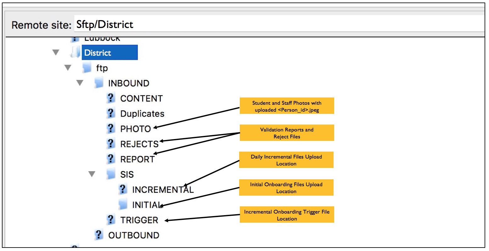
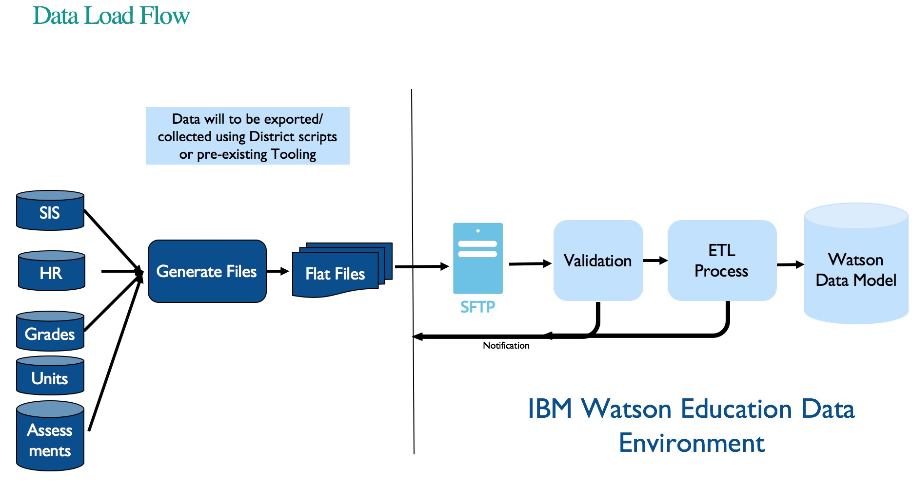

SFTP Process
This page will provide data upload process for different stages, the SFTP folder structure and onboarding
Onboarding Phases
There are essentially 2 phases for Syncing files.
1) Initial Onboarding - The phase typically is a hands on activity and colloboration between IBM and District data team. During this phase Watson Classroom is being onboarded for the district. IBM will work closely with the District Data team to get year to date and historical data integrated to Watson Data Cloud. After a successfull 'Initial Onboarding', Districts can then move to Incremental Onboarding
2) Incremental Onboarding - The phase is kicked-off after the Initial Onboarding is certified as completed. During this process, Districts will upload files daily in an automated fashion, and IBM Watson will integrate the data in a scheduled process. Once this process is implemented, the data integration is deemed to be in a Production mode.
Sftp Upload Folder Layout

Data Integration Flow
